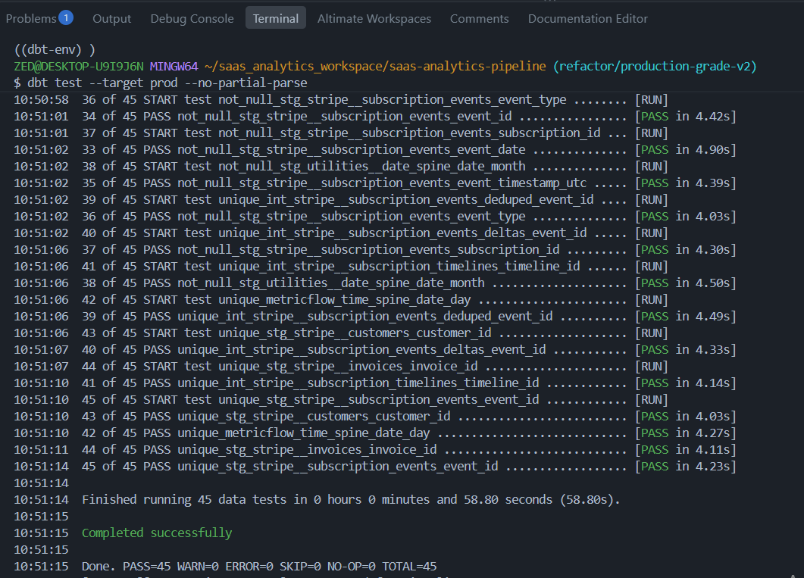

Flagship Open-Source Repository
subscriptions-revenue-mrr-dbt-pipeline
Open SourceA modular dbt-core architecture built to parse complex Stripe subscription cycles, standardize billing intervals, and surface clean revenue tables for downstream semantic layers.
Pipeline & Architecture Artifacts

Rigorous assertion testing for primary keys, uniqueness, relationships, and custom MRR logic.

Modular Directed Acyclic Graph illustrating data transformation from raw Stripe events to revenue marts.

Continuous daily subscription interval models handling tier upgrades, downgrades, and cancellations.

Real-time MRR waterfalls, net revenue retention (NRR), and cohort lifetime value visualizations.
Cleans raw Stripe events, normalizes timestamps, and handles currency conversions safely.
Constructs continuous daily subscription intervals and maps tier upgrades seamlessly.
Exposes auditable MRR waterfalls and cohort retention matrices ready for BI dashboards.